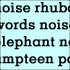
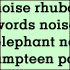
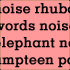
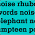
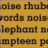

| Pic // | Name // | In Brief // |
|

| HEARD AND NOT SEEN | I sat in on the taping of five episodes of Wheel of Fortune a couple of months back. |
|

| THE QUEST FOR SILENCE | The noisy lifestyle of being an immigrant. |
|
| MIXED RESPONSE | A non-fiction article looking at the various meanings and idiosyncracies of mix tapes. It includes responses from musicians, zinesters and anyone suffering from mix tape disorder. |
|

| GRADUATION DAY | I'm a bit upset now because pretty soon it'll be my graduation day and I will be going to high school |
|

| FALLING SOUND | A non-fiction story about the sound of silence and the silence of sound. |
|
| SOUND AND SILENCE | I don't think I've been anywhere that's truly silent. |
|
| TOTALLY ADDICTED TO BASS | Essay on the role of bass-heavy music in a wide range of youth subcultures. |
|

| SLOW - MOTION | I felt it on my nape.... |
|
| STARTING FROM SCRATCH | It's an ordinary brick suburban house in a quiet street. |
|
| MOMENTS AND NOISES | Come on come on come on... |